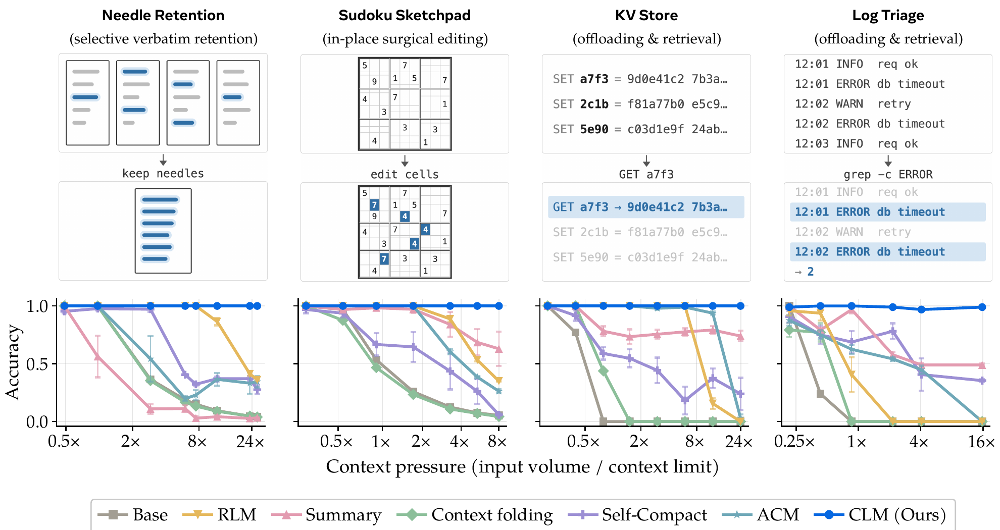
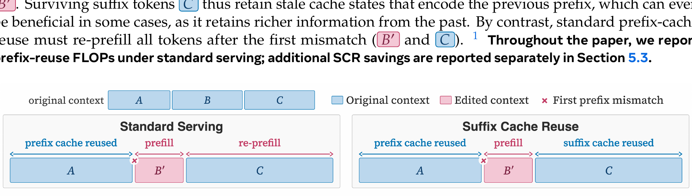
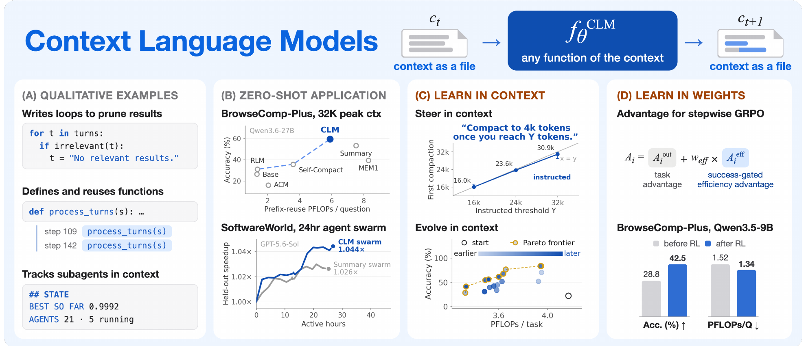
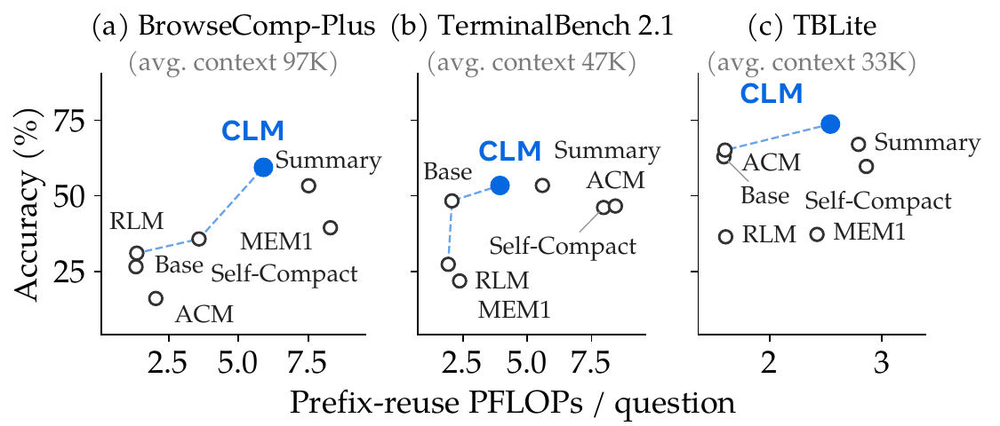
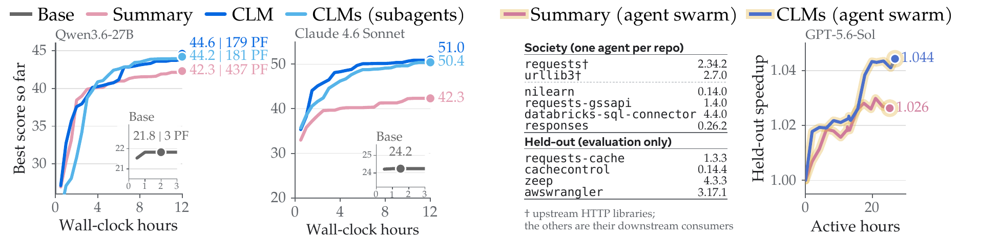
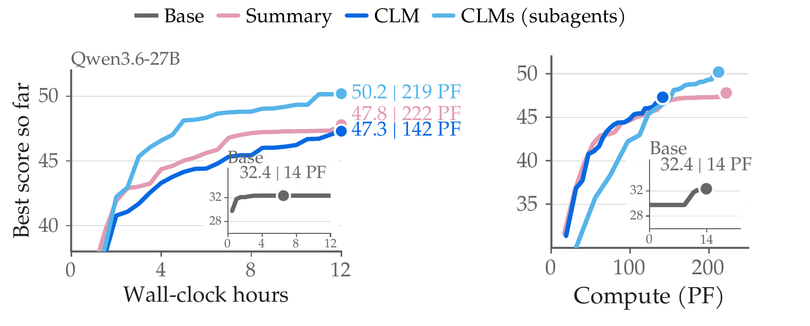

Context Language Models
What if an AI agent could edit its own memory?
The paper
The problem
What problem does it solve?
An AI agent working on a long task keeps piling up text: tool outputs, notes, past steps. This pile is its context, and it has a size limit. Something has to decide what to keep, shorten or throw away.
Until now that decision was made by outside code (a "harness"), with fixed rules such as "summarize everything when the context is 75% full". The model itself never really controlled its own memory. Sec 1
Why does it need solving?
- Summaries lose or distort facts. A summary can drop a detail the agent needs ten steps later, or state something wrong. Sec 3
- Fixed tools limit the strategy. Even newer systems that let the model choose actions only offer a menu someone predefined (compact, offload, retrieve). A task might need something else, such as keeping one line word for word or fixing one cell of a board. Sec 2
- Memory handling is tuned separately from reasoning, even though what is in context directly shapes the next thought. Overview of Sec 1
- Cost: long runs (12 to 24 hours) are expensive, so wasteful context management is a real money problem. Abstract

The idea
A normal agent is like a person who can only add lines to the bottom of a notebook, while an assistant occasionally tears pages out and replaces them with a summary. A Context Language Model is the person holding the eraser and pen. They cross out stale notes, rewrite a messy page, and keep one important quote exactly as written.
Read it left to right: the model reads its context file, then either just continues or edits the file. Every change is synced back as the next turn's context, and the server reuses cached computation where it can.
Method
The approach, intuitively
How it works in plain steps: Sec 4.1
- The context is mirrored as a file and its path is given to the model in the system prompt.
- The model can edit that file with ordinary Bash commands (delete lines, rewrite, append notes, move big data to other files).
- Every edit is instantly synced back to the model's live context for the next turn.
- If the model does nothing special, new tokens are simply appended, so it behaves like a normal model.
- Many agents = many context files. Creating or deleting a file creates or ends a sub-agent.
In math terms: a normal model does c_next = c_now + output. A CLM does c_next = f_CLM(c_now), where f can be any edit the model chooses.
The paper also shows the model can learn better context habits three ways: from a one-line instruction, from an evolving written "skill" document, and from reinforcement learning (stepwise GRPO with a reward for being cheap only when the task succeeded). Sec 4.2 / Fig 1
Challenges the authors faced
How they handled it: they invented prefix-reuse FLOPs to measure true trajectory cost, and Suffix Cache Reuse, which finds text that survived an edit and reuses its cached work. Sec 1
How they handled it: they built ContextBench, four synthetic tasks (Needle Retention, Sudoku Sketchpad, KV Store, Log Triage) where an agent that could keep everything would answer everything, so scores reflect only context management. Sec 3, App. D
How they handled it: a success-gated efficiency advantage: cheapness is rewarded only among trajectories that succeeded. Sec 4.2

What they found

Results
All numbers below come from the paper. "PFLOPs" is the paper's prefix-reuse compute measure; lower is cheaper.
| Test | CLM | Compared with | Source |
|---|---|---|---|
| BrowseComp-Plus (deep research), Qwen3.6-27B | 59.4% accuracy | 11.4% higher than strongest baseline, with 21.5% fewer FLOPs | Abstract, App. F |
| TerminalBench 2.1 (coding) | matches best baseline | about 29.5% fewer FLOPs | Sec 1 |
| 12-hour EdgeBench (10 tasks) | 5% higher score | 59% fewer FLOPs than Codex-style summary | Abstract, Sec 1 |
| 24-hour six-repo agent swarm | 65% greater speedup | same compute as summary swarm | Abstract |
| Math optimization (4 problems) | best score on all four | vs OpenEvolve: up to +16.8% (Heilbronn), +3.0% (circle packing) | Sec 1, Fig 18 |
| Steering with evolved "skill" (ContextBench, held-out KV Store) | 74.2% | 38.3% before the skill | App. F |
| Reinforcement learning, Qwen3.5-9B on BrowseComp-Plus | 28.8% to 42.5% | summary harness trained the same way: 42.1% | Abstract, Sec 1 |
| Suffix Cache Reuse | about 35% less server compute | vs standard SGLang at matched performance | Abstract |
Interesting behaviors the model invented on its own: keeping a scoreboard to track sub-agents, creating an internal "notes" chat role, and defining reusable context-cleaning functions. Sec 1, Fig 1a


Where it falls short
Limitations and critique
From the paper Editable context opens new safety risks (persistent prompt injection); Suffix Cache Reuse is approximate because reused cached states were computed under an earlier prefix, and it depends on model architecture and serving setup. The paper has no dedicated limitations section; these appear in Sec 6 and the overview of its text.
From the paper Gains depend on the model's ability to decide when to edit: Qwen3.5-9B edits 1.4 times per task on TerminalBench 2.1 and makes no edit in half the tasks, while Qwen3.6-27B edits 2.6 times. App. F
My assessment
- The advantage shrinks with more room. With a 128K budget on EdgeBench-10, CLM scores 47.3 against 47.8 for summarization (at 142 vs 222 PFLOPs), and the 50.2 result needs the sub-agent version. Much of the benefit at 32K is cost, not accuracy. App. F, Fig 19
- Several results rest on little data. The math-optimization comparison uses one run per method (per the overview of the paper), so differences like +3.0% may be within noise.
- Hints may help CLM more than baselines. CLM receives an editing reminder before the budget, while the summary baseline compacts on its own trigger. The authors call this a temporary augmentation. App. E
- No tests on safety defenses yet; the risk is named but not measured.
- Mostly Qwen and a few closed models; I did not see results across a wide range of model families.

What it changed
The paper came out in September 2026, so it's too early to say what it changed. Its lasting claim is the shift in who controls memory: the model edits its own context directly, instead of outside code deciding what to keep.
What to remember. Letting the model edit its context can beat fixed rules on long tasks while using less compute, but the gain is largest at small context budgets, and editable context is also a new safety risk.
Future scope
Authors propose
- Scale up RL so CLMs can explore and learn their own context strategies. Sec 6
- Harness-to-CLM distillation: turn existing harness operations into CLM actions and eventually absorb them into model weights, treating harnesses as a kind of procedural memory. Sec 6
- Study and defend the new attack surface of editable context while keeping its flexibility. Sec 6
My additions
- Models that know their own context usage natively, so the reminder hint is not needed.
- Edit logs or version history so mistaken deletions can be undone and audited.
- Head-to-head comparisons with the newest RL-trained compaction methods under the same compute.
Verdict
READ The core idea is simple, the experiments span coding, research, math and multi-day swarms, and the cost accounting is unusually honest. Read Sections 1, 3, 4 and 6 first; skim the appendix unless you build agent infrastructure.
Caveat: some headline gains are at a small 32K context budget and some experiments are single runs, so treat the exact percentages as indicative.
Key terms and sources
Key terms
- Context
- Everything the model can see right now: the task, past steps and tool outputs. It has a size limit.
- Harness
- The wrapper code around a model that runs tools and decides how history is managed.
- Compaction
- Shrinking old context, usually by summarizing it.
- KV cache
- Saved intermediate work so the server does not recompute text it already processed.
- Prefix caching
- Reusing that saved work only for the unchanged start of the text.
- Suffix Cache Reuse
- The paper's method for also reusing saved work for text after an edit.
- Prefix-reuse FLOPs
- The paper's cost measure covering decoding, prefilling and re-prefilling across a whole run.
- Context pressure
- Total input pushed through an episode divided by the context limit. 1× means keep-everything would just fill the context.
- GRPO
- A reinforcement learning method; here applied step by step with an extra reward for efficiency among successful runs.
- ContextBench
- The paper's four-task test that isolates context management from reasoning.